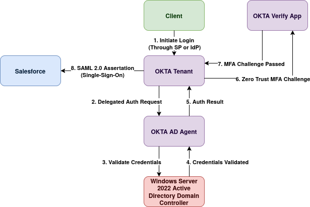
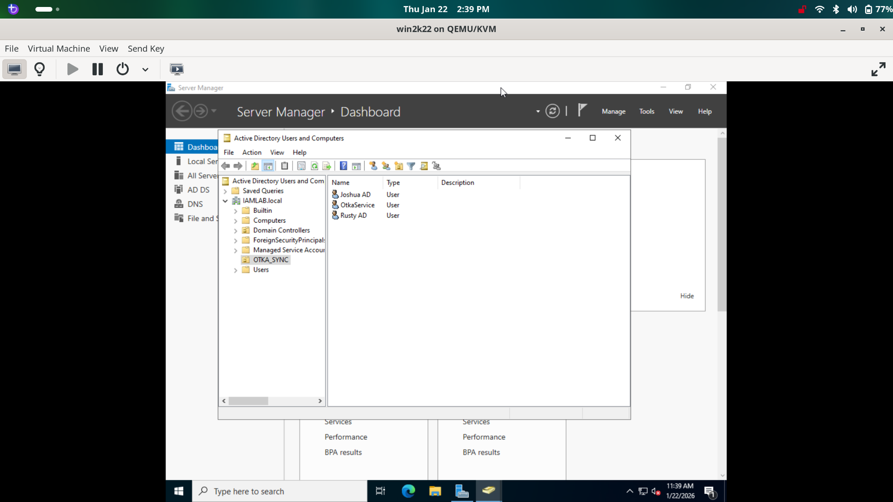
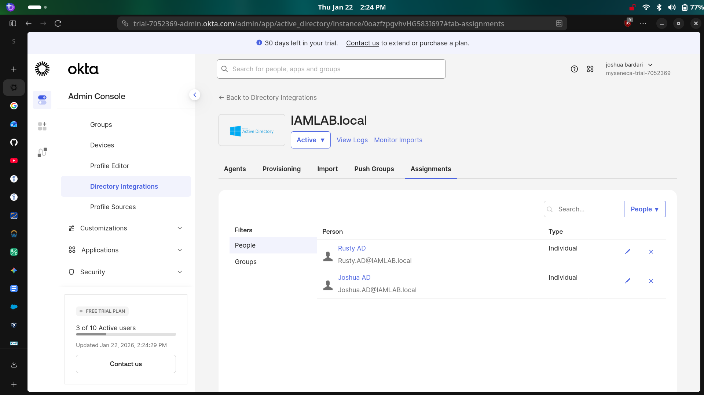
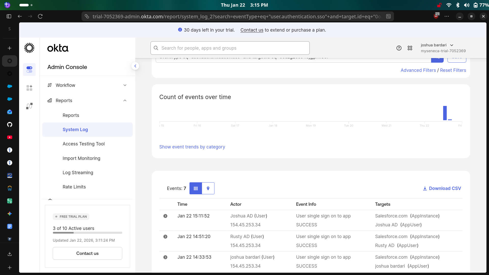
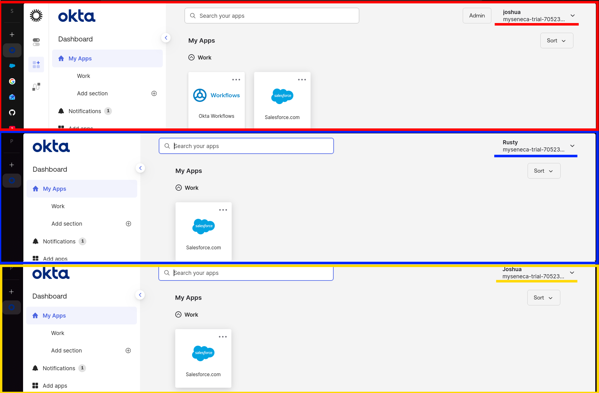
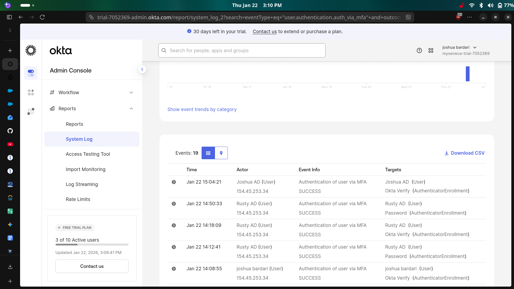
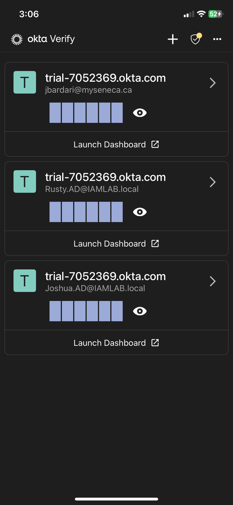

Joshua Bardari
Project Lead
Project Overview
In this homelab project I deployed a full Hybrid Identity solution integrating an on-premise Windows Server Active Directory with Okta Cloud acting as an Identity Provider (IdP).
I configured Delegated Authentication to centralize credential management and established SAML federation with Salesforce acting as a Service Provider (SP),
reducing login friction while enforcing Zero Trust MFA policies. Thank you to @sweeeezyit on TikTok for the idea! :)
Architecture Components
Windows Server 2022
Okta Developer
Salesforce
Active Directory
Architecture Diagram

Phase 1: Infrastructure (Active Directory)
Windows Server 2022
Virtualization
AD DS
Simulating an enterprise environment, I deployed a local Windows Server 2022 Domain Controller on a virtual machine.
- Deployed Windows Server 2022 on a Virtual Machine with static IPv4 configuration.
- Promoted the server to a Domain Controller (Forest:
iamlab.local).
- Created a dedicated Organizational Unit (OU)
Okta_Sync and provisioned test users (Rusty, Joshua) to simulate employee onboarding.
AD Infrastructure Setup

Phase 2 & 3: Hybrid Directory Integration
Okta AD Agent
Delegated Auth
JIT Provisioning
The core of this project was bridging the gap between on-premise directory infrastructure and modern cloud identity.
- Created a Service Account in AD with specific permissions for the Okta Agent.
- Installed the Okta AD Agent on the Windows Server to open a secure outbound connection (no firewall ports opened).
- Configured Delegated Authentication, allowing users to authenticate to Okta using their on-premise AD passwords.
- Enabled Just-In-Time (JIT) Provisioning to automatically create Okta user profiles when an AD user signs in for the first time.
Proof of Sync

Phase 4: SAML Single Sign-On (SSO)
Salesforce
SAML 2.0
Federation
I eliminated password fatigue by configuring Federation between Okta and Salesforce, allowing users to log into Salesforce and Okta with one login
- Configured Salesforce as a Service Provider (SP) within the Okta App Catalog.
- Exchanged X.509 Certificates and Issuer URLs to establish a trust relationship.
- Mapped Okta attributes to Salesforce Federation IDs to ensure correct user matching.
- Validated the SP-Initiated and IdP-Initiated login flows.
Proof of SSO

End-User Dashboards with Salesforce (joshua Admin, Rusty, Joshua

Phase 5: Security Policies (MFA)
Okta Verify
Zero Trust
Context-Based Access
Finally, I hardened the environment by implementing context-based access policies.
- Activated Okta Verify as a possession factor (Something you have).
- Configured a Global Session Policy to challenge users for MFA when logging in from a new IP address or device.
- Tested "Impossible Travel" scenarios and unknown device logins to verify the challenge occurred.
Proof of MFA

Phase 6: Mobile Experience (Okta Verify)
iOS / Android
Multi-User Support
To validate the user lifecycle across the entire organization, I enrolled the test users into the Okta Verify mobile app.
- Simulated the end-user onboarding experience by setting up MFA on a mobile device.
- Verified that multiple distinct identities from Active Directory were successfully synced.
- Confirmed that Push Notifications arrive instantly for the correct user context.
Proof of Enrollment
